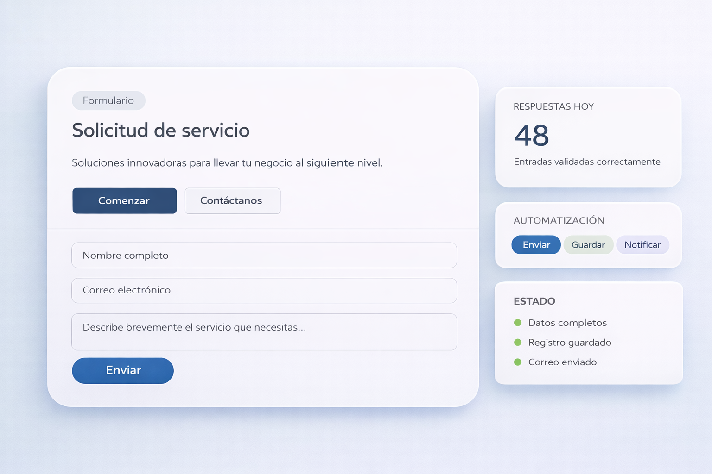

Contacto y cotización
Ideal para páginas web donde necesitas recibir solicitudes mejor estructuradas.
Diseñamos formularios que no solo recopilan información: la organizan, la validan y la convierten en acciones útiles para tu negocio.

Cómo funciona
En lugar de recibir datos sueltos, puedes convertir cada envío en un proceso claro, medible y mucho más útil para tu operación.
Llena el formulario con los datos que realmente necesitas.
Se revisa formato, campos obligatorios y consistencia de datos.
Las respuestas pasan a una base o panel listo para seguimiento.
Puede enviarse un correo, una alerta o iniciar otro proceso interno.
Más que un formulario
Dependiendo de tu negocio, un formulario puede servir para captar clientes, registrar usuarios, recibir pedidos, filtrar información o canalizar tareas.
Ideal para páginas web donde necesitas recibir solicitudes mejor estructuradas.
Útil para clientes, empleados, alumnos, visitantes o miembros.
Perfecto para soporte, requerimientos, incidencias o autorización de procesos.
Qué puede incluir
El formulario se construye según tu proceso, no con campos genéricos.
Evita datos incompletos, mal escritos o que no te sirvan realmente.
Las respuestas pueden pasar a una base de datos o panel de consulta.
Correos, alertas, confirmaciones o disparadores internos.
Segmenta respuestas por tipo, prioridad, área o estatus.
Se pueden conectar con paneles, CRM o flujos administrativos.
Beneficios
La información entra mejor, se revisa más rápido y se puede usar con más orden dentro del negocio.
Podemos ayudarte a diseñar formularios claros, funcionales y conectados con procesos reales, para que la información que recibes tenga valor desde el primer momento.
Solicitar cotización →